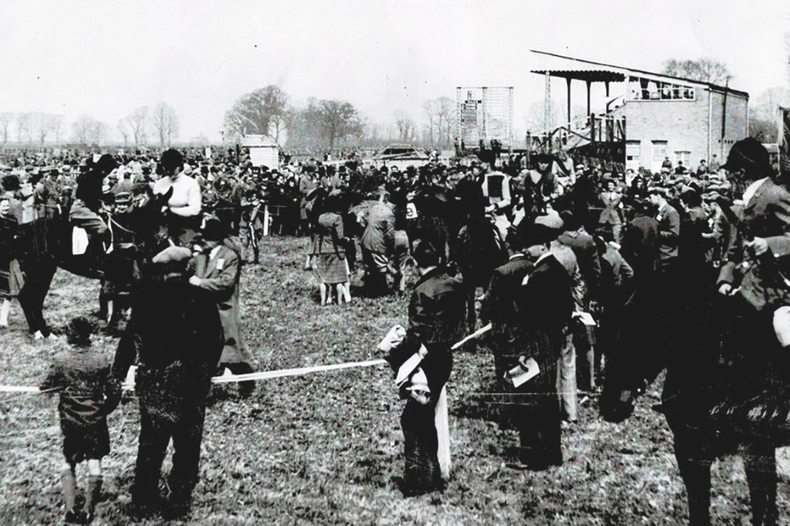
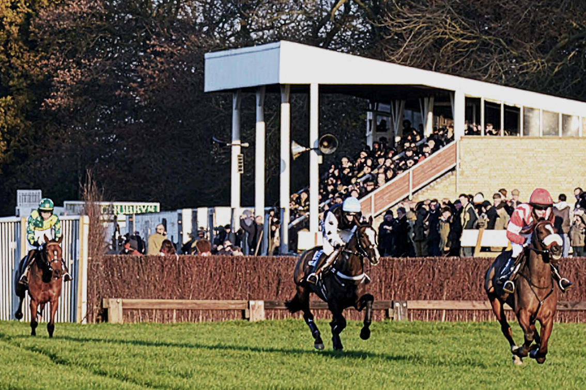
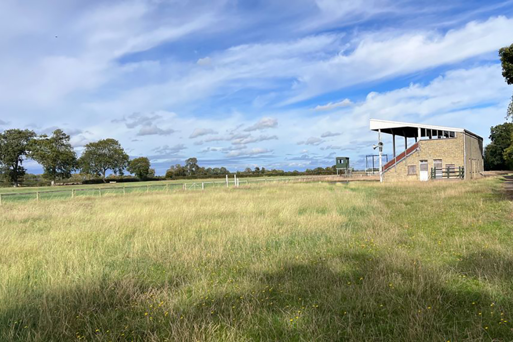

Site History
The Cottenham racecourse site has been associated with organised outdoor events for more than a century. Unknown Worlds aims to continue that tradition by preserving the landscape while returning the site to its historic role as a place where people gather for shared experiences.
Origins of the Cottenham Racecourse
For much of that time the land was home to the Cottenham racecourse, a venue that attracted visitors from across the region for horse racing and social gatherings.
Local historians record that racing at the site began informally in the late eighteenth or early nineteenth century, when Cambridge undergraduates travelled to the area to race horses against local riders. What began as informal competitions between farmers and students gradually evolved into organised race meetings that drew wider attention.
By the early twentieth century the racecourse had become an established venue. Improvements were made to the facilities and steeplechase and hurdle races were held according to National Hunt rules. Contemporary newspaper reports describe large crowds attending the meetings and enjoying a full afternoon of sport.

The Racecourse as a Regional Venue
At its peak the racecourse was an important part of the local social calendar. Meetings attracted visitors from Cambridge and surrounding villages, with riders, spectators, and local farmers gathering on the course for organised racing events.
The races were widely reported in regional newspapers and occasionally attracted notable visitors. For many years they formed part of the wider sporting and social life of the region.
Like many rural racecourses, activity gradually declined during the later twentieth century. Over time the land returned to agricultural use and the physical structures associated with the racecourse disappeared.

The Site Today
Rather than intensive development, we're focussing on maintaining the open landscape while allowing the land to once again host organised events. In doing so it continues a long local tradition of using the site for shared recreation and entertainment.
By recognising the historical role of the racecourse while investing in the landscape’s future, the project aims to ensure the site remains an active part of the local area for years to come.
